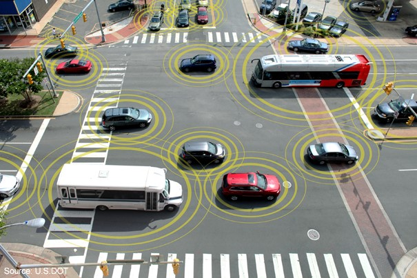

By Matt McCall
This is What the Smartest Investors of the Next Decade Will Own
Note: Each day leading up to the 10X Innovation Summit, Matt will release a brand-new video and article, explaining one of the investing “megatrends” he is closely tracking right now. Watching these videos is the best way to prepare for the big night, so be sure to check back daily through July 31st.
On August 2, 2018, Apple became the first American company to cross the threshold of $1 trillion in market value.
That’s a “1” with 12 zeros after it.
Apple’s crossing of that mark was a big, hyped event that made all the major news outlets.
Less hyped was the fact that three other companies were hot on Apple’s heels in the race to join the $1 trillion club. Amazon surged past that market cap a month later on September 4, 2018. Microsoft joined the $1 trillion club in April of this year. Another company with a good shot of being worth over $1 trillion soon is Alphabet (Google’s parent).
Think about that list for a moment. There’s no car maker on it. No big manufacturer like General Electric. There’s no oil company, no mining company, no steel company, and no banking company.
The market has spoken. Technology – with its ability to create smartphones, software, time-saving apps, social media platforms, online shopping experiences, and the like – is now the most dominant, most valued part of our economy. Tech entrepreneurs and investors are making fortunes as a result.
If Apple, Google, Amazon, and Microsoft are the tallest skyscrapers – the commanding heights of our “economic city” – it’s no exaggeration to say their foundations rest on the bedrock of our communications grid… aka “the internet.” Without this bedrock, those skyscrapers crash to the ground.
As you read this, the next trillion-dollar companies – the next Amazon, the next Alphabet (Google’s parent company), etc. – are being hatched in research facilities and garages around the world. These firms will change the world and revolutionize our economy. If you follow technology even a little bit, you know what fields these companies are in: self-driving cars, artificial intelligence, virtual reality/augmented reality, blockchain, mobile payments, and the Internet of Things (IoT).
Just like how the businesses of Apple, Alphabet, Amazon, and Microsoft can’t function without the internet, the next generation of world-changing, $1 trillion mega winners can’t survive without the subject of this essay. It’s the bedrock our future will rest on… and it’s a giant investment opportunity.
How Building Toll Roads Can Make You a Millionaire
One way to view the internet buildout of the 1990s is as the construction of a vast network of toll roads.
These toll roads linked friend to friend… family member to family member… and most importantly from a capitalist’s point of view: business to consumer. Millions upon millions of people wanted to send their messages, data, and advertisements over the internet’s toll roads. It was a communications revolution.
History shows building the revolution’s toll roads was incredibly profitable. Cisco, the leading maker of networking equipment, enjoyed a 34,000% increase in market value during the 1990s. Intel, which made computer chips, saw its stock soar more than 3,500% during the 1990s. EMC, which made data storage devices, saw its shares advance more than 80,000% during the 1990s.
As incredible as the internet’s first toll roads were, their size and capacity pales in comparison to the next generation of toll roads… which will lead to your doorstep soon.
They go by the name of “5G.”
You Ain’t Seen Nothing Yet
The path to the 5G wireless communications network began 45 years ago on Tuesday, April 3, 1973.
Martin Cooper, a senior engineer at Motorola, stood on 6th Ave. in Manhattan. He was about to make the first cell phone call in history, and he was nervous about whether it would work.
Martin didn’t call a family member, friend or even a co-worker. Instead, he called his chief competitor, Dr. Joel Engle at Bell Labs. The two had been in a race to get to this day first.
“Joel, this is Marty,” he said. “I’m calling you from a cell phone, a real handheld personal cell phone.”
Consider those the first words in the mobile communications revolution.
Mobile phones were then introduced to the public nearly a decade later, and by the 1980s, cell phones were creeping into the cars of wealthier individuals. The first devices weighed a couple of pounds and were bigger than your head – they are referred to as “bricks” for a reason – but they did what had never been done before. The first generation of mobile technology kicked off the trend toward an increasingly connected world.
The second generation of networks (2G and 2.5G) were introduced in the 1990s. They gave us the ability to text, another step forward in communication. We now take texting for granted – a lot of people text more than they make actual phone calls.
The move into the new millennium was accompanied by the move to 3G, which brought major advances in the speed and capabilities of cellular networks. With the third generation, devices were able to access broadband technology, which made possible entertainment, web browsing, and shopping on a mobile device. There is now a generation of people who find it hard to believe that 20 years ago there was no Amazon app to instantly reorder your toilet paper.
Just as semiconductors were part of the infrastructure for the internet, they were also the backbone of the move to 3G. As a result, chip stocks made big moves during this era. Qualcomm (QCOM) rallied more than 1,000% in the 1990s ahead of when 4G networks started to appear.
As nice as it was to be able to browse the internet on your phone, the fourth generation of wireless connectivity took mobile technology to another level with the ability to stream video without waiting for buffering. It was more enjoyable, yes, but it also opened up business opportunities for content companies.
Still, the biggest advancement was real-time information, which led to the sharing economy. Mobile devices could talk to other devices in real-time, connecting people instantaneously. Without real-time data transfer there would be no Uber, GrubHub, or any other app that relies on a fast connection.
Once again, there were big investment returns in the 4G phase. Cell tower companies were among those enjoying huge rallies. As more data was being transmitted with the increasing use of video, new and better towers were required.
But honestly, we haven’t seen anything yet. The most advanced breakthrough of all is right around the corner. Just as there were fortunes made in prior generations, there will be big money made once again. In fact, I think the opportunity is even bigger now because the leap ahead will drive some of the most powerful tech trends the world has seen.
I think of it as the next-generation toll road. The road to the future passes through 5G, and it’s time to set up our booth and start collecting.
5G’s Widespread Impact
The next-generation network will take speeds to levels that seem almost unimaginable.
How fast?
Well, 5G will in theory increase the level of speed to match that of human reflexes, so we’re talking the blink of an eye, perhaps literally.
The current 4G network clocks in at around 100 megabits per second, which is extremely fast compared to 3G. But once 5G rolls out, that number jumps to 10,000 megabits per second – or 100 times faster than the current speed.
To be honest, my phone and iPad stream videos nearly flawlessly already, so why do I even need the speed to be 100 times faster? It will eliminate those slow connections we run into at times, which is nice, but what’s really about to happen is that phones and mobile devices are about to become mobile supercomputers.
The big breakthrough will be the ability to connect a lot more devices that share large amounts of data in real-time. So if you think we live in a connected world already, you haven’t seen anything yet.
From cloud storage to the Internet of Things to augmented reality (AR) and virtual reality (VR), 5G will allow all of the most dominant tech trends of our time to not only flourish but reach new heights.
5G and the Future of Transportation
There is one breakthrough industry in particular that cannot exist without 5G: autonomous vehicles, or AVs.
Just as investors who were able to get in early during prior transformational trends profited to the tune of 20 to 50 times their money, the AV/5G mega-trend is one current transformational trend that cannot be ignored.
When a $7 trillion industry like transportation is completely transformed for the first time in nearly a century, it will have huge ramifications. The full rollout of the 5G network will provide the much-needed communications infrastructure for auto manufacturers to introduce AVs to the masses.
Once again, it’s reliability and real-time data sharing that make it possible.
Imagine a self-driving car traveling down the highway at 75 miles per hour and the network suddenly experiences a 100-millisecond delay. In any other circumstance, that delay would never be noticed, but it could be devastating in an AV. It could result in the braking system stopping the vehicle 10 feet beyond where it would have otherwise. That 10 extra feet could lead to a major accident.
Future AVs will essentially be data centers on wheels. The amount of data that will be stored in the brain of the vehicle will be beyond what we can imagine.
Morgan Stanley predicts that a 2050 AV will produce 40 terabytes (TBs) per hour. Today, your iPhone produces data in the range of 1-2 gigabytes (GBs) per month. That would mean a 2050 AV will produce about 20,000 times more data in one hour than your iPhone currently produces in an entire month!
Such enormous amounts of data will be required due to the number of decisions taking place at all times. The AV will have to take in data from sensors surrounding the vehicle and instantaneously decide when to accelerate, brake, turn, etc. Not only will the vehicle need 5G for computing within itself, it will also be talking to the sensors in other vehicles, the roads, cell towers, satellites, and even smart cities.
The thought of vehicles “talking” to each other makes me think of some pretty creepy sci-fi images. It also makes me think of the movie Cars.
In reality, vehicles talking to each other will look nothing like the animated movie but more like the image below. Notice that everything in that picture has a sensor that is talking to the other sensors in the area. Even the man pushing the child in the stroller and the bicyclist are talking to the vehicles!
Toyota has plans to deploy its vehicle-to-vehicle (V2V) and vehicle-to-infrastructure (V2I) technology in the U.S. by 2021. Again, the rollout of V2V and V2I is impossible without widespread 5G. The current 4G network is great for streaming videos, but the speed and latency would create major safety issues for AVs.
Get in Position Now
You can see how 5G networks will pave the way for so many breakthrough innovations, not just faster phones but in self-driving cars, smart homes and cities, virtual reality, healthcare, and so much more.
When exactly does all of this excitement happen?
It’s already starting.
You may have seen advertising for 5G home internet service in limited cities. Some of the early advertising from Verizon came under criticism for calling it that because it doesn’t operate on the agreed-upon 5G standard. That will come by the end of this year, as it expands to other cities. Smartphone manufacturers are already rolling out the first 5G-enabled phones.
So, we’re already seeing the very first stages, and the pace will only pick up from here. That’s true of the stock prices, too, which will move ahead of specific developments.
Long-term winners in this sector will be 5G gear makers like Nokia, 5G infrastructure providers like Crown Castle, and specialized chip makers like Skyworks Solutions.
Consider this short list a jumping off point for 5G ideas, but by no means a complete or static guide. The early days of any technological revolution are full of change. My advice is to follow this sector closely, study it frequently for emerging winners, and own a handful of companies to get a good blend of risk/reward.
You’ll end up owning some of the world’s most valuable toll roads… just like the smartest investors of the 1990s did.
Regards,

Matt McCall
Senior Investment Strategist, InvestorPlace